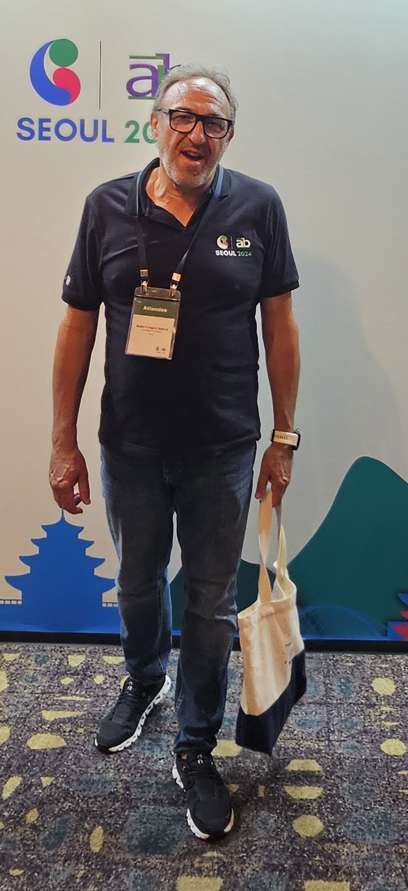

Rafel Crespí Cladera
Full Professor (Catedràtic) of Organization and Management
Department d'Economia de l'Empresa, Universitat de les Illes Balears
I study corporate governance, family business, and ownership structure — how boards, owners, and institutions shape firm behavior, from listed companies and banks to family firms and hotel groups.
Recent Research
A running feed of recent papers, in plain language, newest first. Full publication list on the Research page.
La estructura y el gobierno corporativo de la empresa familiar
A chapter for practitioners and family-business owners walking through why governance matters even inside a family firm — the three-circles model, and which governance structures actually help families balance ownership, management, and family interests as the business grows.
Read more →Ownership, Control, and Productivity: Family Firms in Comparative Perspective
Family firms are often assumed to be less productive than non-family firms — but this paper shows that the real story depends on how ownership and control are structured, not on family involvement alone. Comparing firms across countries, we find the productivity gap narrows or disappears once governance structure is taken into account.
Read more →Optimal Board Independence with Gray Independent Directors
Regulators tend to push for strictly independent boards, but this paper argues that "gray" directors — formally independent, yet retaining some tie to the firm — can actually improve monitoring by combining independence with useful firm-specific knowledge.
Read more →Financial Distress in the Hospitality Industry During the Covid-19 Disaster
When the pandemic hit tourism overnight, which hotel and hospitality firms survived? This paper traces the answer to ownership and capital structure decisions made long before the crisis — now our most-cited recent paper, with over 230 citations.
Read more →Business Groups and Internationalization: Effective Identification and Future Agenda
Business groups look very different from country to country, which makes them notoriously hard to define consistently in research. We propose a clearer way to identify them and lay out where the field should go next in studying how they expand abroad.
Read more →Politicians in the Boardroom: Is It a Convenient Burden?
Politically connected directors are a double-edged sword: useful for navigating regulation and access, costly when they crowd out independent oversight. We look at when the balance tips one way or the other.
Read more →→ Full publication list, working papers, and funded projects